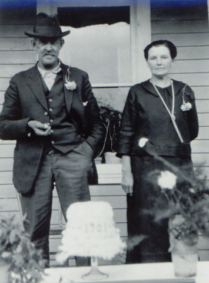

Anne Amundsdatter was born in Norway May 24th, 1879 to Amund and Helene Simonson. She was their 2nd child. In 1881 the family of four emigrated from Norway to America, where they all took on the surname Amundson to follow the American custom of uniform surnames in a family. Seven younger siblings were born in America.
| Anne married Carl Wogsland and together had four boys. She lost Carl in 1946, and died herself in 1953. |

cake says 1901, probably the year they were married. |